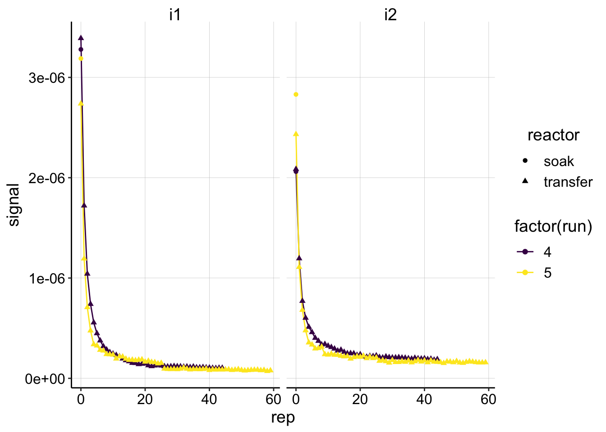
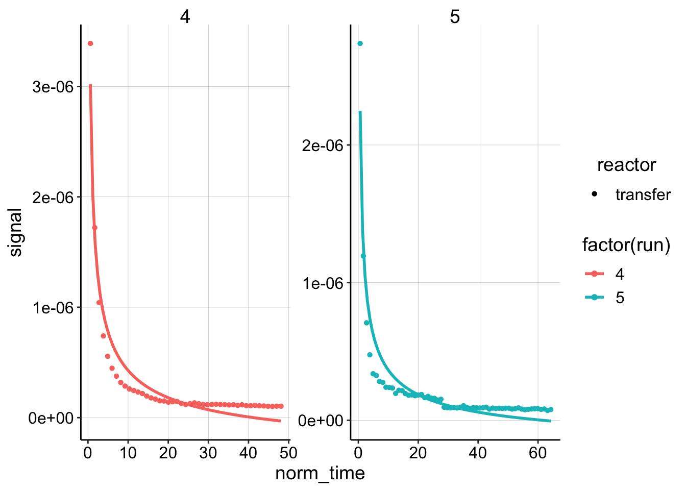
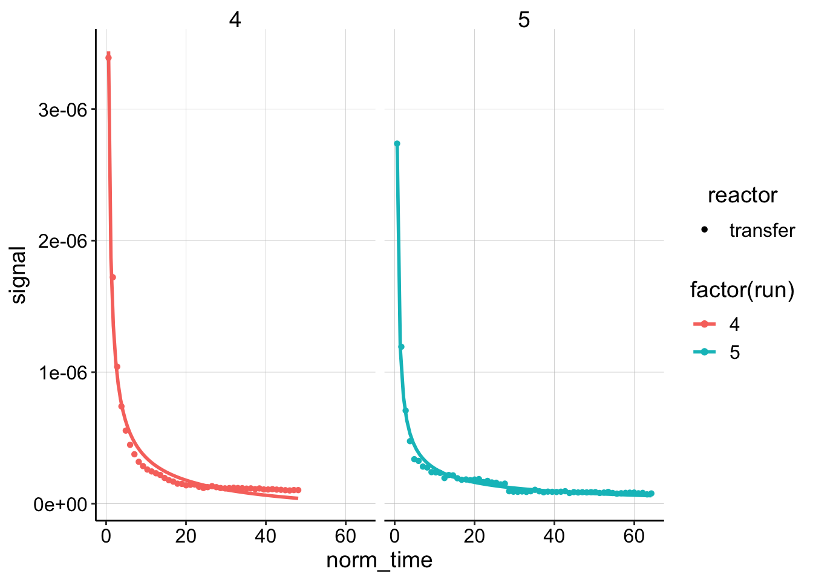
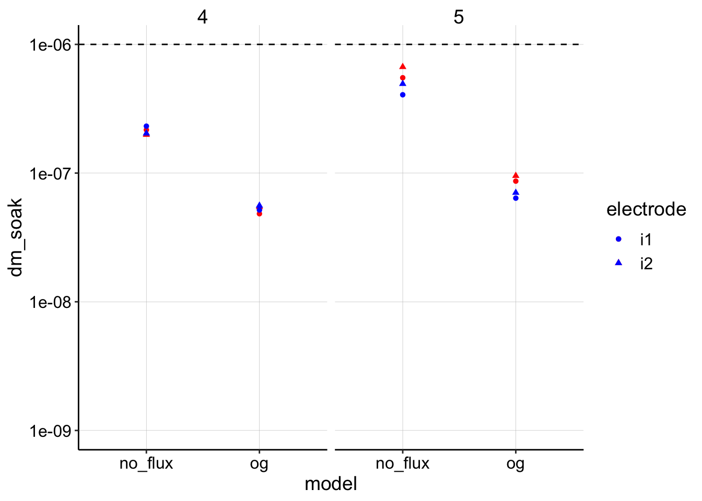
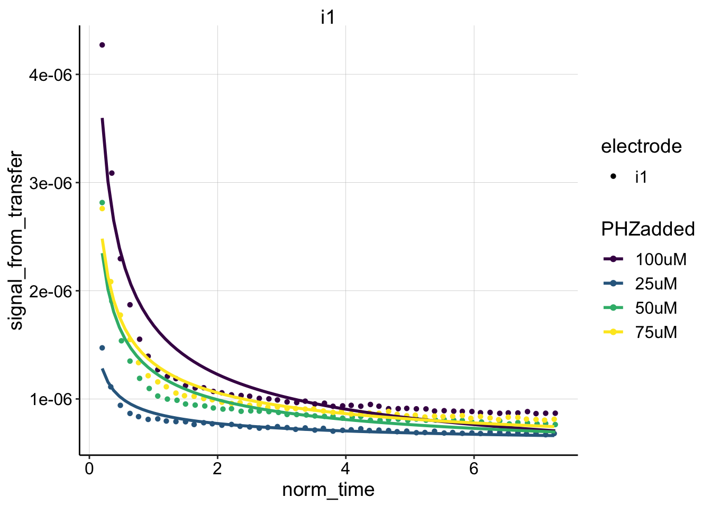
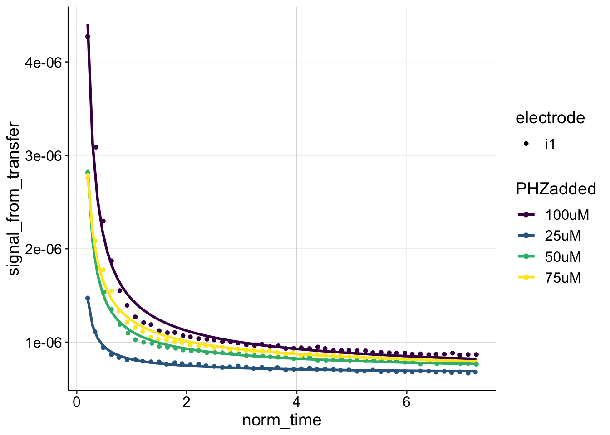
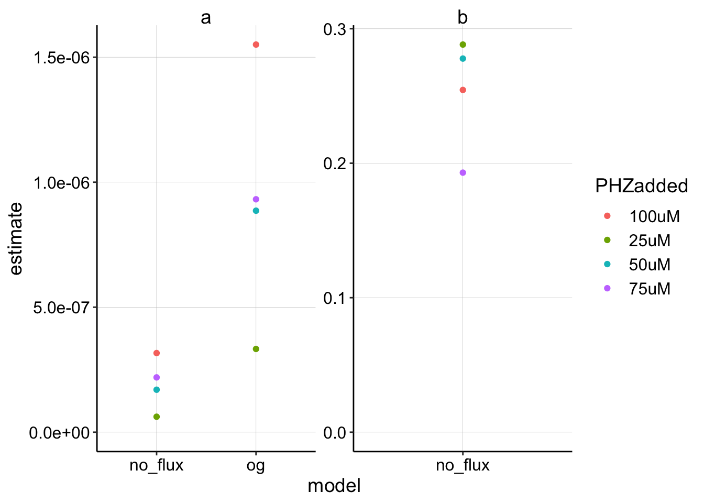
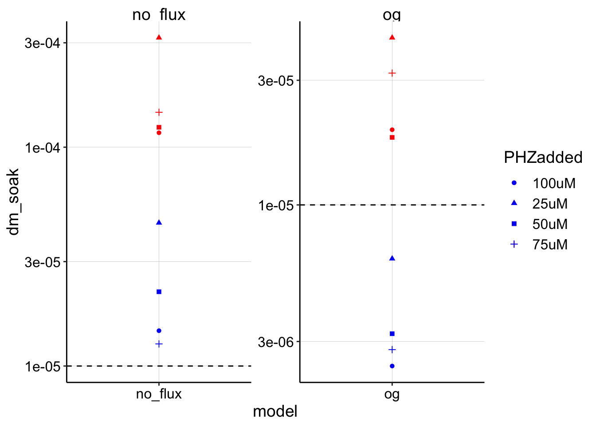
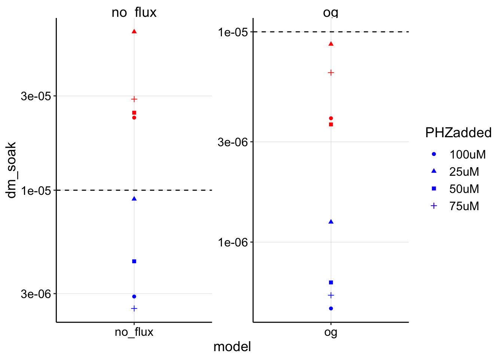
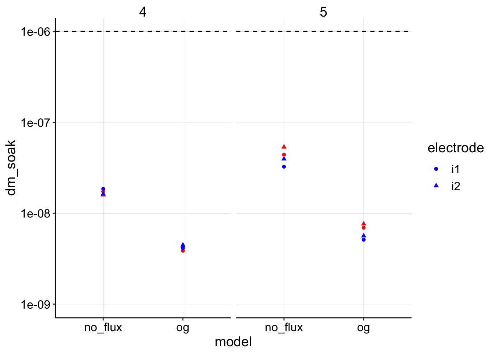

Psoralen treatment - Non equilibrium #2
\(D_m\) Analysis
01_17_19
library(tidyverse)
library(cowplot)
library(broom)
library(modelr)
library(viridis)
library(lubridate)
library(hms)
knitr::opts_chunk$set(tidy.opts=list(width.cutoff=60),tidy=TRUE, echo = TRUE, message=FALSE, warning=FALSE, fig.align="center")
source("../../tools/echem_processing_tools.R")
source("../../tools/plotting_tools.R")
theme_set(theme_1())Intro
Here I will attempt to fit the SWV decays and extract a value for \(D_m\) from the control biofilms.
Results
First, let’s import and look at the data:
dm_data <- read_csv("../Processing/01_17_19_swv_control_dm_processed.csv")
ggplot(dm_data, aes(x = rep, y = signal, color = factor(run),
shape = reactor)) + geom_line() + geom_point() + facet_wrap(~electrode) +
scale_color_viridis(discrete = T) We have two runs of the control biofilm. Each SWV scan was taken at i1 and i2, which yielded similar results. The decays also look pretty similar between runs. The last thing to notice is that we have the soak data points associated with each decay. Recall that the latest strategy for estimating \(I_0\) is to use soak SWV as the upper bound and the first transfer SWV as the lower bound. You can see that the values actually are reasonably close to each other, which is good since it will give us relatively tight bound.
Plotting fits with two models
Let’s fit the datasets with the model we have been using, which assumes a no flux boundary at x=0 and extends to infinity in the other direction.
e = exp(1)
dm_data_norm <- dm_data %>% group_by(run, electrode, reactor) %>%
mutate(min_time = min(minutes)) %>% mutate(norm_time = minutes -
min_time + 0.6)
ggplot(dm_data_norm %>% filter(reactor == "transfer" & electrode ==
"i1"), aes(x = norm_time, y = signal, color = factor(run),
shape = reactor)) + geom_point() + geom_smooth(method = "nls",
formula = y ~ b * (x)^-0.5 + a, method.args = list(start = c(b = 0.1,
a = 1e-07)), se = F) + facet_wrap(~run, scales = "free") Well, to be honest, I think those are pretty bad fits. For this reason, I thought about another model that we could try, which would place another no flux boundary at some spot, \(L\). Therefore, we would go from using a semi-infinite model above to a finite model below. Let’s see how it does:
ggplot(dm_data_norm %>% filter(reactor == "transfer" & electrode ==
"i1"), aes(x = norm_time, y = signal, color = factor(run),
shape = reactor)) + geom_point() + geom_smooth(method = "nls",
formula = y ~ (a * (x)^-0.5) * (2 + e^(b * (x)^-0.5)) + c,
method.args = list(start = c(a = 0.1, b = 0.1, c = 0)), se = F) +
facet_wrap(~run)
# ggplot(dm_data_norm %>% filter(reactor=='transfer'), aes(x
# = norm_time^-0.5, y = signal, color=factor(run), shape =
# reactor)) + geom_point()+ facet_wrap(~electrode)+
# scale_color_viridis(discrete = T)Well, it’s still not perfect, but that’s definitely better than the original model. I think it captures both the decay part of the plot and the long tail much better. Let’s write out the derivation for this model, so that we can extract a \(D_m\) from the coefficients we pull out.
Derivation of finite diffusion model
Starting with 1D Diffusion over time (t) and space (x) the concentration in the system is described by: \[C(x,t) = \frac{M_0}{A \sqrt{4 \pi D t}}e^{\frac{-x^2}{4 D t}}\] With a no flux boundary at L=0 (our original diffusion model): \[C(x,t) = C_{\text{real}}+C_{\text{image}} = \frac{M_0}{A \sqrt{4 \pi D t}}(e^{\frac{-x^2}{4 D t}} + e^{\frac{-(x+2L)^2}{4 D t}})\] evaluate at L=0 \[C(x,t) = C_{\text{real}}+C_{\text{image}} = \frac{M_0}{A \sqrt{4 \pi D t}}(e^{\frac{-x^2}{4 D t}} + e^{\frac{-x^2}{4 D t}})\] You can see that the right side will reduce to 2, when evaluated at x=0, which was exactly our original diffusion model.
Now, if we add a no flux boundry at L=0 and L=L: \[C(x,t) = C_{\text{real}}+C_{\text{image}_1}+C_{\text{image}_2} = \frac{M_0}{A \sqrt{4 \pi D t}}(e^{\frac{-x^2}{4 D t}} + e^{\frac{-x^2}{4 D t}} + e^{\frac{-(x+2L)^2}{4 D t}})\] *Note that when adding multiple image sources we should really add infinite image sources to counteract the two images interacting (see MIT HW), however I don’t think this will make a major difference and I don’t know how to incorporate it right now…so let’s move forward.
Evaluate at x=0 \[C(x,t) = \frac{M_0}{A \sqrt{4 \pi D t}}(e^0 + e^0 + e^{\frac{-(2L)^2}{4 D t}})\] \[C(x,t) = \frac{M_0}{A \sqrt{4 \pi D t}}(2 + e^{\frac{-(2L)^2}{4 D t}})\] Substituting for SWV \[I_{swv} = \frac{I_0 V}{A \sqrt{4 \pi D_m t}}(2 + e^{\frac{-(2L)^2}{4 D t}})\] if we fit the data to a model of the form \[y=a t^{-0.5} (2 + e^{b/t})\] then \[a = \frac{I_0 V}{A \sqrt{4 \pi D_m}}\] and \[b = \frac{-(2L)^2}{4 D_m}\] rearranging for \(D_m\)
\[D_m = \frac{I_0^2 V^2}{A^2 4 \pi a^2}\] or if we replace \(\frac{V}{A} = z\) with \(z = \sqrt{D_{ap} t_s}\) then we get the following. This expression will allow us to calculate a \(D_m\) from the fit coefficient \(a\), \(I_0\), \(D_{ap}\) and \(t_s\), as we were able to do with the original model. \[D_m = \frac{I_0^2 D_{ap} t_s}{4 \pi a^2} \] and \[D_m = \frac{-(2L)^2}{4 b}\]
Ok, with the expression for \(D_m\) from the fit coefficient \(a\) in hand, no we can fit all of the data and compare the two models.
Calculating \(D_m\) from fits
Ok, so now I’ll use nonlinear least squares to fit the datasets with each model. Let’s look at the estimates for a and b:
nls_no_flux <- dm_data_norm %>% filter(reactor == "transfer") %>%
group_by(run, electrode) %>% do(tidy(nls(., formula = signal ~
(a * (norm_time)^-0.5) * (2 + e^(b/norm_time)) + c, start = list(a = 0.1,
b = 0.1, c = 0)))) %>% mutate(model = "no_flux")
nls_og <- dm_data_norm %>% filter(reactor == "transfer") %>%
group_by(run, electrode) %>% do(tidy(nls(., formula = signal ~
(a * (norm_time)^-0.5) + c, start = list(a = 0.1, c = 0)))) %>%
mutate(model = "og")
nls_fits <- rbind(nls_no_flux, nls_og)
ggplot(nls_fits %>% filter(term != "c"), aes(x = model, y = estimate,
color = electrode)) + geom_point() + facet_wrap(~term, scales = "free") +
ylim(0, NA) Ok, this seems reasonable given that the estimate for the finite (no flux) model will be multiplied by 4 in the \(D_m\) calculation. It looks like there may be ~4x difference in the two model estimates of \(a\).
Ok, this seems reasonable given that the estimate for the finite (no flux) model will be multiplied by 4 in the \(D_m\) calculation. It looks like there may be ~4x difference in the two model estimates of \(a\).
Now let’s define our functions to calculate \(D_m\) from \(a\).
So, for the new finite model we will use \(D_m = \frac{I_0^2 D_{ap} t_s}{4 \pi a^2}\) to calculate \(D_m\) and for the original model we will use \(D_m = \frac{I_0^2 D_{ap} t_s}{\pi a^2}\), notice they only differ by the 4 in the denominator, because the 2 in the numerator of the slope term has been moved in the finite model.
dm_from_a_noFlux <- function(estimate, i_0, dap, t_s = 0.1) {
dm <- (i_0^2 * dap * t_s)/(4 * pi * estimate^2)
dm
}
dm_from_a_OG <- function(estimate, i_0, dap, t_s = 0.1) {
dm <- (i_0^2 * dap * t_s)/(pi * estimate^2)
dm
}
# dm_a_noFlux <- dm_from_a_noFlux(estimate = 6e-7, i_0 =
# 3e-6, dap = 1e-6)
# dm_a_OG <- dm_from_a_OG(estimate = 2e-6, i_0 = 3e-6, dap =
# 1e-6)
# sqrt(-1 * 4 * dm_a_noFlux) / 2And now we can take the rep 0s from the soak and transfer conditions to get the soak scan and the first transfer scan, which will be used as the upper and lower bounds of the true \(I_0\). Then we can calculate a \(D_m\) with both sets of parameters and both models for each dataset. Let’s plot the \(D_m\) estimates to see what it looks like!
soak_i0 <- dm_data_norm %>% mutate(i0_soak = signal) %>% filter(rep ==
0 & reactor == "soak") %>% select(electrode, reactor, run,
i0_soak)
transfer_i0 <- dm_data_norm %>% mutate(i0_transfer = signal) %>%
filter(rep == 0 & reactor == "transfer") %>% select(electrode,
reactor, run, i0_transfer)
dm_estimates_soak <- left_join(nls_fits %>% filter(term == "a"),
soak_i0, by = c("electrode", "run"))
dm_estimates <- left_join(dm_estimates_soak, transfer_i0, by = c("electrode",
"run"))
dm_estimates_og <- dm_estimates %>% filter(model == "og") %>%
mutate(dm_soak = dm_from_a_OG(estimate = estimate, i_0 = i0_soak,
dap = 1e-06, t_s = 0.1)) %>% mutate(dm_transfer = dm_from_a_OG(estimate = estimate,
i_0 = i0_transfer, dap = 1e-06, t_s = 0.1))
dm_estimates_noFlux <- dm_estimates %>% filter(model == "no_flux") %>%
mutate(dm_soak = dm_from_a_noFlux(estimate = estimate, i_0 = i0_soak,
dap = 1e-06, t_s = 0.1)) %>% mutate(dm_transfer = dm_from_a_noFlux(estimate = estimate,
i_0 = i0_transfer, dap = 1e-06, t_s = 0.1))
dm_estimates_tidy <- rbind(dm_estimates_og, dm_estimates_noFlux)
ggplot(dm_estimates_tidy, aes(x = model, shape = electrode)) +
geom_point(aes(y = dm_soak), color = "red") + geom_point(aes(y = dm_transfer),
color = "blue") + geom_hline(yintercept = 1e-06, linetype = 2) +
facet_wrap(~run) + scale_y_log10(limits = c(1e-09, 1e-06)) Ok, using this set of parameters the models give reasonable results I suppose. First, notice all the estimates are below the dashed line, which was the input \(D_{ap}\), so that’s reassuring. The other thing to note is that the original (og) model consistently estimates \(D_m\) lower than the finite no flux model. However, these results are dependent on the parameter \(t_s\), which I discuss further below.
Blank Data
Let’s compare our analysis used for the biofilm data to the blank IDA data, where we can be more confident that \(D_{ap}\) and \(D_m\) should be very similar. First let’s read the data and fit with the original model:
blank_data <- read_csv("../../11_28_18_blank_IDA/Processing/11_28_18_swv_decays_Processed.csv") %>%
filter(PHZadded != "10uM")
ggplot(blank_data, aes(x = norm_time, y = signal_from_transfer,
color = PHZadded, shape = electrode)) + geom_point() + geom_smooth(method = "nls",
formula = y ~ b * (x)^-0.5 + a, method.args = list(start = c(b = 0.1,
a = 1e-07)), se = F) + facet_wrap(~electrode) + scale_color_viridis(discrete = T) The fit looks ok, not great. Let’s look at the no flux model:
ggplot(blank_data, aes(x = norm_time, y = signal_from_transfer,
color = PHZadded, shape = electrode)) + geom_point() + geom_smooth(method = "nls",
formula = y ~ (a * (x)^-0.5) * (2 + e^(b * (x)^-0.5)) + c,
method.args = list(start = c(a = 0.01, b = 0.5, c = 0.1)),
se = F) + scale_color_viridis(discrete = T)
Ok, I would say this fit is significantly better. Let’s now extract those fit coefficients and calculate \(D_m\) in the same way.
blank_no_flux <- blank_data %>% group_by(PHZadded) %>% do(tidy(nls(.,
formula = signal_from_transfer ~ (a * (norm_time)^-0.5) *
(2 + e^(b/norm_time)) + c, start = list(a = 0.1, b = 0.1,
c = 0)))) %>% mutate(model = "no_flux")
blank_og <- blank_data %>% group_by(PHZadded) %>% do(tidy(nls(.,
formula = signal_from_transfer ~ (a * (norm_time)^-0.5) +
c, start = list(a = 0.1, c = 0)))) %>% mutate(model = "og")
blank_fits <- rbind(blank_no_flux, blank_og)
ggplot(blank_fits %>% filter(term != "c"), aes(x = model, y = estimate,
color = PHZadded)) + geom_point() + facet_wrap(~term, scales = "free") +
ylim(0, NA) Ok, seems reasonable. Notice that these estimates for \(a\) are significantly lower than the estimates for the biofilm above, which is consistent with faster \(D_m\).
Let’s convert to \(D_m\) and look at the results:
blank_i0 <- blank_data %>% group_by(PHZadded) %>% mutate(i0_transfer = max(signal_from_transfer)) %>%
filter(signal_from_transfer == i0_transfer) %>% mutate(i0_soak = i0) %>%
select(PHZadded, i0_transfer, i0_soak)
blank_estimates <- left_join(blank_fits %>% filter(term == "a"),
blank_i0, by = c("PHZadded"))
blank_estimates_og <- blank_estimates %>% filter(model == "og") %>%
mutate(dm_soak = dm_from_a_OG(estimate = estimate, i_0 = i0_soak,
dap = 1e-05, t_s = 0.1)) %>% mutate(dm_transfer = dm_from_a_OG(estimate = estimate,
i_0 = i0_transfer, dap = 1e-05, t_s = 0.1))
blank_estimates_noFlux <- blank_estimates %>% filter(model ==
"no_flux") %>% mutate(dm_soak = dm_from_a_noFlux(estimate = estimate,
i_0 = i0_soak, dap = 1e-05, t_s = 0.1)) %>% mutate(dm_transfer = dm_from_a_noFlux(estimate = estimate,
i_0 = i0_transfer, dap = 1e-05, t_s = 0.1))
blank_estimates_tidy <- rbind(blank_estimates_og, blank_estimates_noFlux)
ggplot(blank_estimates_tidy, aes(x = model, shape = PHZadded)) +
geom_point(aes(y = dm_soak), color = "red") + geom_point(aes(y = dm_transfer),
color = "blue") + geom_hline(yintercept = 1e-05, linetype = 2) +
facet_wrap(~model, scales = "free") + scale_y_log10() Interesting, so with these parameters, it seems that the no flux model gives a huge overestimate, where the og model actually does provide reasonable (albeit wide) upper and lower bounds around the expected \(D_{ap}\). I find this a little curious though, because the no flux model fit is much better, and if anything the og model fit has a slower decay/\(D_m\) than the actual data. See below for further discussion.
Questioning the parameter \(t_s\)
Could it be that one of our parameters is quite off? With this parameter set, the only parameter that we aren’t already attempting to estimate somehow is \(t_s\), scan time. The \(I_0\) is taken into account with the soak and first transfer datapoints, \(D_{ap}\) we are already estimating, and the \(D_m\) estimate should scale with it anyway, so I don’t think that matters. The estimate (aka “a”) is coming from the fit anyway, so that only leaves \(t_s\). Can we think of an informed way to ballpark a scan time?
For the SWV fast parameter set we use: * Init E (V) = 0.1 * Final E (V) = -0.5 * Incr E (V) = 0.001 * Amplitude (V) = 0.025 * Frequency (Hz) = 300
Therefore the scan window is 0.6V or 600mV, with a 1mV increment will require 600 cycles. 1 cycle takes 1/frequency or 1/300 seconds. 1/300 seconds * 600 cycles = 2 seconds for the total scan time. If the electrode is actually only driving a reaction from -0.2V to -0.4V (200mV) that would be 1/3 * 2 seconds = 0.666 seconds. However, the peak is reached in half that amount of time ( 0.333 seconds). That said, each cycle is partially renewing the diffusion layer for each redox species because the amplitude is 25mV.
Only, starting 12.5mV before PYO redox potential there’s net reduction occuring? 12 cycles would be 12 / 300 = 0.04 seconds (but that includes up and down steps), but even after those steps, most of the PYO is re-oxidized by the downward step. So for the one step up at the peak the scan time would be the pulse time \(t_p\), which is 1/2 * 1/300 = 0.001666, if we take that time over 12 cyles we get ~0.02…which empirically provides the expected results, not sure how to proceed.
All this is to say, that I do not know how to theoretically get at the scan time, and as far as I know now anything between 0.3 and 0.001 seconds could probably be justified…See below for how the blank data look when we use an empirically “good” value of \(t_s = 0.008\):
blank_estimates_og <- blank_estimates %>% filter(model == "og") %>%
mutate(dm_soak = dm_from_a_OG(estimate = estimate, i_0 = i0_soak,
dap = 1e-05, t_s = 0.008)) %>% mutate(dm_transfer = dm_from_a_OG(estimate = estimate,
i_0 = i0_transfer, dap = 1e-05, t_s = 0.008))
blank_estimates_noFlux <- blank_estimates %>% filter(model ==
"no_flux") %>% mutate(dm_soak = dm_from_a_noFlux(estimate = estimate,
i_0 = i0_soak, dap = 1e-05, t_s = 0.008)) %>% mutate(dm_transfer = dm_from_a_noFlux(estimate = estimate,
i_0 = i0_transfer, dap = 1e-05, t_s = 0.008))
blank_estimates_tidy <- rbind(blank_estimates_og, blank_estimates_noFlux)
ggplot(blank_estimates_tidy, aes(x = model, shape = PHZadded)) +
geom_point(aes(y = dm_soak), color = "red") + geom_point(aes(y = dm_transfer),
color = "blue") + geom_hline(yintercept = 1e-05, linetype = 2) +
facet_wrap(~model, scales = "free") + scale_y_log10() Now both models have the expected behavior. The no flux/finite model estimates straddle the given \(D_{ap}\). The soak \(I_0\) estimates in this case are the true \(I_0\) values, while the transfer \(I_0\) estimates are underestimates. Further, the og model now significantly underestimates \(D_m\) as would be expected from the poor fit of the data.
I do not know if we can justify the use of an empirical value for \(t_s\) by saying that we expect at a blank IDA with PYO in solution we assume \(D_m \approx D_{ap}\) with some citations? If we can, then let’s see what the biofilm data would look like with this parameter set.
dm_estimates_og <- dm_estimates %>% filter(model == "og") %>%
mutate(dm_soak = dm_from_a_OG(estimate = estimate, i_0 = i0_soak,
dap = 1e-06, t_s = 0.008)) %>% mutate(dm_transfer = dm_from_a_OG(estimate = estimate,
i_0 = i0_transfer, dap = 1e-06, t_s = 0.008))
dm_estimates_noFlux <- dm_estimates %>% filter(model == "no_flux") %>%
mutate(dm_soak = dm_from_a_noFlux(estimate = estimate, i_0 = i0_soak,
dap = 1e-06, t_s = 0.008)) %>% mutate(dm_transfer = dm_from_a_noFlux(estimate = estimate,
i_0 = i0_transfer, dap = 1e-06, t_s = 0.008))
dm_estimates_tidy <- rbind(dm_estimates_og, dm_estimates_noFlux)
ggplot(dm_estimates_tidy, aes(x = model, shape = electrode)) +
geom_point(aes(y = dm_soak), color = "red") + geom_point(aes(y = dm_transfer),
color = "blue") + geom_hline(yintercept = 1e-06, linetype = 2) +
facet_wrap(~run) + scale_y_log10(limits = c(1e-09, 1e-06)) By using this 0.008 value for \(t_s\) you can see that the estimates for the biofilm \(D_m\) shift downward. If this process is defensible then we may have a case that \(D_m\) could be slower than \(D_{ap}\) in the biofilm. Also note that run 5 had the better fit at the beginning, so I would trust that estimate slightly more than run 4.
Conclusions
- Evaluating two diffusion models
- The original diffusion model actually fits the data quite poorly compared to a slightly more complex finite/no flux diffusion model.
- I think we can estimate \(D_m\) using the fit coefficients for this new model similar to how we did for the old model.
- The finite model estimates significantly higher \(D_m\) values than the original model, possibly because the poorly fitting original model was obviously decaying more slowly than the data and therefore underestimating \(D_m\).
- Evaluating \(I_0\) estimates
- Using the new protocol of estimating an \(I_0\) lower and upper bound from the first transfer scan and the soak scan respectively is practically quite easy to implement.
- For the blank IDA, you can see that the two estimates vary by about an order of magnitude, probably because the concentration is changing very fast.
- For the biofilm IDA, you can see that the two estimates are actually pretty similar!! The fact that they give us reasonable intervals is fantastic and also hints that the concentration is changing much more slowly at the biofilm electrode vs. the blank one.
- The issue of \(t_s\)
- The value of \(t_s\) is proportional to the estimate of \(D_m\), but I can only pin down \(t_s\) to a range of two orders of magnitude in theory, because I don’t really know how to extrapolate from the complex SWV potential vs. time wave.
- If we assume for the blank IDA that \(D_m \approx D_{ap}\), then empirically \(t_s \approx 0.008 \text{ sec}\) provides a good estimate. I am not sure if this will be considered legit enough…
- If we accept that \(t_s\) estimate as reasonable, then it does seem like this dataset for the control biofilm shows a \(D_m\) well below the given \(D_{ap}\)
Next Steps:
- Apply analysis to all three biofilm replicates
- Gain confidence with finite model / derivation (help from math people?)
- Decide how to proceed with \(t_s\) (get feedback)